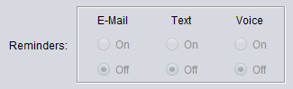
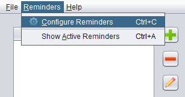
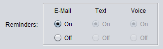
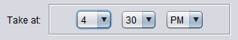
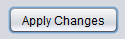
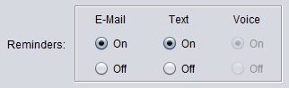
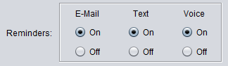
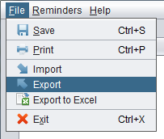
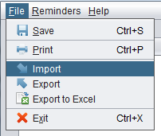
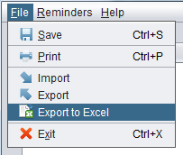

VitaReminder helps you to organize your supplements. For the purposes of this program, a 'supplement' is any vitamin, medicine or nutritional supplement that you want to keep track of.
You begin by adding a new 'regimen', and then you add supplements to that regimen.
To add a new regimen, press the button to the right of the regimens table, and enter a name for this regimen (for example, "My Workout Regimen").
At any time, you can edit a regimen by selecting the regimen in the table and pressing the button.
To delete a regimen, press the button next to the regimens table.
After you create a regimen, you can add supplements to it.
To add a supplement, press the button to the right of the supplements table and enter a name for this supplement.
At any time, you can edit a supplement by selecting the supplement in the table and pressing the button.
To delete a supplement, press the button next to the supplements table.
When you add or edit a supplement, you will notice that the screen contains options to set e-mail, text message and automated voice reminders:

However, at this point all of the radio buttons are disabled.
To enable reminders, you must first enable them in the "Configure Reminders" dialog. You open this dialog by pressing the "Reminders" menu at the top of the screen, and then pressing "Configure Reminders":

To enable e-mail reminders, select the check box next to "Enable e-mail reminders".
Type in your e-mail address and then press the "Verify" button. Check your e-mail inbox for your verification code, and then come back to the screen and enter your code.
After verifying your e-mail address, you will be able to set e-mail reminders for any of your supplements. If you now press the button for any of your supplements, you will see that you can now set e-mail reminders to "On" or "Off":

To test it out, select the "On" button, and then enter a time in the near future:

Now press the Apply Changes button:

Then check your e-mail inbox at that time, and you should receive your e-mail reminder for that supplement.
In the same way, you can enable and set text message and automated voice reminders.
First go back to the "Configure Reminders" dialog, but this time select the check box next to "Enable text-message reminders".
Enter your phone number and press the "Verify" button.
Shortly afterwards, you should receive a text message with your verification code. Enter this code in the field provided.
If you now press the button to the right of the supplements table, you will see that you can now set text message reminders for any of your supplements:

To test it out, select the "On" button, and then enter a time in the near future.
Press the Apply Changes button.
Note: It may occasionally take a minute or two to receive your text message, depending on how busy the network is at the time.
To enable automated voice reminders, select the "Enable voice reminders" check box in the "Configure Reminders" dialog.
If you have already verified your phone number, there is no need to verify it again.
If you now press the button to the right of the supplements table, you will see that you can now set automated voice message reminders for any of your supplements:

To test it out, select the "On" button, and then enter a time in the near future.
Press the Apply Changes button.
Note: It may occasionally take a minute or two to receive your voice message, depending on how busy the network is at the time.
The standard Save menu item and the Save button at the bottom of your screen will save your data to a database on your hard drive.
If you would like to save your data to a file, you can use the Export function.
To do so, select the Export menu item under the File menu:

In the dialog that appears, browse to the location that you would like to save your file to and then press Save.
You can also import this data at a later time.
To do so, select the Import menu item under the File menu:

When you import new data, any of your current data that you are working with will be lost.
As a result, when you attempt to import new data, you will be prompted to save your current data.
You can also export your data to an Excel spreadsheet. The file that is created is in the Excel 2007 (.xlsx) format.
To export your data to an Excel spreadsheet, select the following menu item:

In the dialog that appears, browse to the location that you would like to save your file to and then press Save.